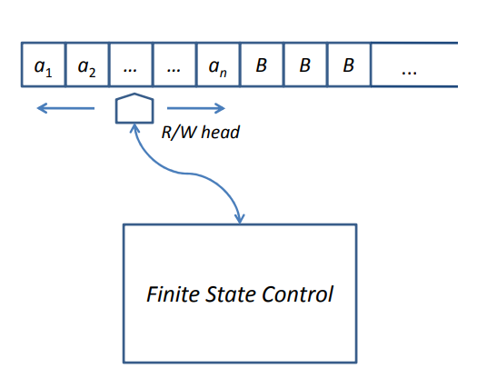

Diusulkan pada tahun 1936 oleh Alan Turing, seorang matematikawan Inggris sebagai model matematis sederhana sebuah komputer. Meskipun sederhana, Mesin Turing memiliki kemampuan untuk menggambarkan perilaku komputer general-purpose. Mesin Turing dapat digunakan untuk menghitung kelas fungsi bilangan bulat yang dikenal sebagai fungsi rekursif sebagian (partial recursive function).
Sama seperti Finite State Automata dan Push Down Automata yang dapat mengenali bahasa formal, maka mesin Turing juga dapat berperan sebagai mesin pengenal bahasa formal. Bahasa yang dikenali oleh Mesin Turing adalah bahasa tanpa pembatasan (unrestricted language), yang disebut juga himpunan terenumerasi rekursif (recursively enumerable set).
Sebuah mesin Turing M dilambangkan dengan notasi formal sebagai berikut:
Q = the set of internal states
Σ = the input symbol
Γ = a finite set of symbols called the tape symbols
δ = the transaction function
q0 = initial state
B = the blank symbols
F = set of final or accepting state
Keadaan sebuah Mesin Turing setiap saat dicirikan oleh tiga hal:

Sebuah mesin Turing terdiri dari komponen-komponen :
Pada keadaan awal, n sel pertama dari pita masukan berisi rangkaian simbol yang harus dikenali (dinyatakan sebagai a1, a2, . . . , an). Sel di sebelah kanan rangkaian simbol berisi B.
Perilaku mesin Turing bergantung pada simbol masukan yang berada pada posisi head read/write dan status dari Finite Control. Dalam setiap pergerakannya, mesin Turing dapat melakukan melakukan salah satu dari aksi berikut:
Gerakan mesin turing diwakili oleh fungsi transisi, contoh:
δ(q 0, 0) = (q 1, 1, X)
Jadi, awalnya statusnya itu ada di q0, dan membaca 0. Kemudian head nya bergerak menurut aturan produksinya sehingga statusnya sekarang yaitu ada di q1 dan menulis 1 menggantikan 0 yang tadi dan posisi read/write bergerak ke arah X (berupa R=gerak kekanan atau L=gerak kekiri).